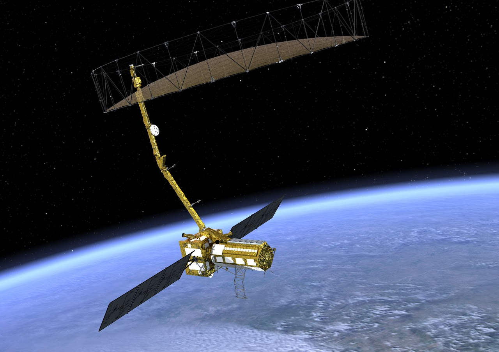

SAR is a type of active data collection where a sensor produces its own energy and then records the amount of that energy reflected back after interacting with the Earth. While optical imagery is similar to interpreting a photograph, SAR data require a different way of thinking in that the signal is instead responsive to surface characteristics like structure and moisture.